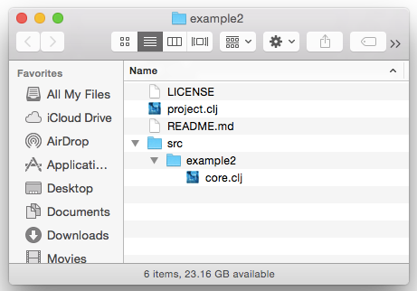
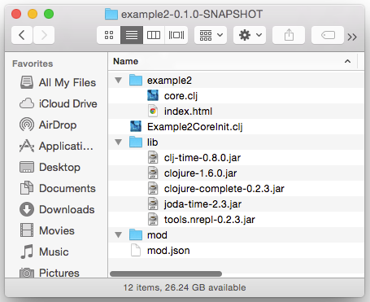

Building with Clojure and Vert.x
Does Vert.x make Node.js irrelevant?
Knowledge
is the difference between choice and choices.
Simple Example
Verticle
|
|
Verticle Event Loops
- Based on the Netty EventLoop
- Event loop count based on the number of cores
- Verticles can share event loops
Scaling
$ vertx run server.clj -instances 4Vert.x Command Line Tool
Running Verticles
$ vertx run server.clj
$ vertx run server.clj -instances 4 -conf config1.json
$ vertx run server.clj -cp bin:lib/old -clusterRunning Modules
$ vertx runzip module1.zip
$ vertx runmod com.example2~my-mod~0.1.0Leiningen Integration
Vert.x Leiningen Template |
lein-vertx Leiningen Plugin |
|
|
Lein-Vertx Example
project.clj
(defproject example2 "0.1.0-SNAPSHOT"
:dependencies [[org.clojure/clojure "1.6.0"]
[clj-time "0.8.0"]]
:plugins [[lein-vertx "0.3.1"]]
:vertx {:main example2.core/init
:author "FIXME: Your name"
:keywords ["FIXME: keywords"]
:developers ["FIXME: other developers"]})Lein-Vertx Example
core.clj
(ns example2.core
(:require [vertx.http :as http]
[vertx.http.route :as rm]
[clj-time.core :as t]
[clj-time.coerce :as tc]))
(def routes
(-> (rm/get "/currenttime"
#(http/end (http/server-response %)
(-> (t/now) tc/to-long str)))
(rm/all #".*"
#(http/send-file (http/server-response %) "index.html"))))
(defn init
[]
(let [port (Integer. (or (System/getenv "PORT") "3000"))]
(-> (http/server)
(http/on-request routes)
(http/listen port))
(println (str "Starting Http server on port " port))))Lein-Vertx Example
In the Medium
Worker Verticles
|
|
Shared Maps and Sets
- Immutable
- Primatives
- Strings
- Buffers
- Custom Types with Interface
Limited to Single Instances
Event Bus
Broadcast
(vertx.eventbus/publish "namespaced.address1"
{:a 1 :b "A12345"})Point-to-Point (Round Robin)
(vertx.eventbus/send "namespaced.address1"
{:a 1 :b ""}
(fn [data] (println data)))Event Bus
With Timeout
(vertx.eventbus/send "namespaced.address1"
1000
{:a 1 :b ""}
(fn [error data] (println "A")))Request & Response
(vertx.eventbus/on-message "namespaced.address1"
(fn [data]
(vertx.eventbus/reply {:a ""}
(fn [data]
(vertx.eventbus/reply {:b true}))
(fn [data]
(vertx.eventbus/reply {:b true}))))Module Structure
Folder Structure
Naming
com.insanitydesign~vertx-mod-cassandra-persistor~0.4.1<dependency>
<groupId>com.insanitydesign</groupId>
<artifactId>vertx-mod-cassandra-persistor</artifactId>
<version>0.4.1</version>
</dependency>Module Structure
mod.json
{
"licenses": ["Eclipse Public License"],
"homepage": "http://example.com/FIXME",
"description": "FIXME: write description",
"developers": ["FIXME: other developers"],
"author": "FIXME: Your name",
"keywords": ["FIXME: keywords"],
"main": "Example2CoreInit.clj"
}Deployment
Platform
- Minimum JDK 7
- Vertx Platform Download
- Permission to open at least one local port (for clustering)
Without Platform
- Minimum JDK 7
- Fat Jar or Embedded Application
In the Large
Clustering
$ vertx run server.clj -cluster- Requires ability to open ports
- Distributed Event Bus
- Does not bridge Shared maps and sets
Cluster management is handled by Hazelcast.
SockJS Bridge
Builtin Event Bus Bridging
Other Bridge Modules
- MQTT
- ZeroMQ
- clj-drone?
High Availability
Automatic Failover
$ vertx run server.clj -ha
$ vertx -haGroups
$ vertx run server.clj -ha -hagroup frontendQuorums
$ vertx run server.clj -ha -quorum 2
$ vertx run server.clj -ha -quorum 2Hazelcast 3.2.x
Cluster Detection
- Multicast (Default)
- AWS Group
- TCP/IP
Managed from a cluster.xml file, found on the classpath,
Vert.x install location, or Java system properties.
$ java -Dvertx.cluster.public.host=10.164.105.33 \
-Dvertx.cluster.public.port=60558 ... \
org.vertx.java.platform.impl.cli.Starter run server.clj \
-cluster -cluster-port 9123 -cluster-host 127.10.192.129Fat Jars
The Uberjars of Vert.x
$ vertx fatjar mymodule-1.0
$ java -jar mymodule-1.0-fat.jar
$ java -jar mymodule-1.0-fat.jar -cluster -conf myconf.jsonDeployment Options
EC2, Digital Ocean, or other VMs
Heroku
$ heroku create --stack cedar \
--buildpack https://github.com/Jared314/heroku-buildpack-vertx-jdk7.git
Docker
FROM dockerfile/java:oracle-java8
MAINTAINER Oliver Nautsch
RUN wget http://dl.bintray.com/vertx/downloads/vert.x-2.1.2.tar.gz && \
tar zxf vert.x-2.1.2.tar.gz -C /usr/share && \
rm vert.x-2.1.2.tar.gz && \
ln -s /usr/share/vert.x-2.1.2/bin/vertx /usr/bin/vertx
CMD ["vertx"] $ docker pull ollin/vertxAWS Beanstalk
I have not tested Beanstalk, but I don't see why not.
Polyglot Language Support
- Java
- Groovy
- Scala
- Clojure
- Javascript (Rhino & Nashorn)
- CoffeeScript
- JRuby
- Jython
- PHP (Quercus)
- (Custom...)
Embedding the Event Bus
(ns eventbus1.core
(:require [vertx.embed :as vertx]
[vertx.eventbus :as eb])
(:import [java.util.concurrent CountDownLatch]
[org.vertx.java.core Handler])
(:gen-class))
(defn -main [& args]
(vertx/set-vertx! (apply vertx/vertx args))
(let [latch (CountDownLatch. 1)]
(eb/on-message "namespaced.address1" (fn [data] (eb/reply data)))
(eb/on-message
"namespaced.address2"
(reify Handler
(handle [_ msg]
(let [m {:address (.address msg)
:body (.body msg)}]
(eb/publish "namespaced.address3" (:body m))))))
(.await latch)))Embedding the Platform
project.clj
(defproject embedded1 "0.1.0-SNAPSHOT"
:description "FIXME: write description"
:url "http://example.com/FIXME"
:license {:name "Eclipse Public License"
:url "http://www.eclipse.org/legal/epl-v10.html"}
:dependencies [[org.clojure/clojure "1.6.0"]
;; Required for Vertx Embedding
[io.vertx/vertx-core "2.1.2"]
[io.vertx/vertx-platform "2.1.2"]
[io.vertx/vertx-hazelcast "2.1.2"]
[io.vertx/clojure-api "1.0.4"]]
:source-paths ["src/clj"]
:main embedded1.core)SockJS Event Bus Bridge
(ns event-server.core
(:require [vertx.embed :as vertx]
[vertx.http :as http]
[vertx.http.sockjs :as sockjs])
(:import [java.util.concurrent CountDownLatch])
(:gen-class))
(defn req-handler [req]
(condp = (.uri req)
"/" nil
"/favicon.ico" nil))
(defn -main [& args]
(vertx/set-vertx! (apply vertx/vertx args))
(let [latch (CountDownLatch. 1)
server (-> (http/server)
(http/on-request req-handler))]
(-> (sockjs/sockjs-server server)
(sockjs/set-hooks
:created (fn [sock] (println "handleSocketCreated") true)
:closed (fn [sock] (println "handleSocketClosed"))
:send (fn [sock msg address] (println "handleSend") true)
:publish (fn [sock msg address] (println "handlePub") true)
:pre-register (fn [sock address] (println "handlePreRegister") true)
:post-register (fn [sock address] (println "handlePostRegister"))
:unregister (fn [sock address] (println "handleUnregister") true))
(sockjs/bridge {:prefix "/events"} [{}] [{}]))
(http/listen server 3000)
(.await latch)))SockJS Event Bus Bridge
client.cljs
(ns cljsclient.core
(:require [vertx.client.eventbus :as eb]))
(let [eventbus (eb/eventbus "/events")]
(eb/on-open eventbus (fn [bus]
(println "eventbus open")
(eb/on-message bus
"namespaced.address3"
(fn [data] (.log js/console data)
(eb/close bus)))
(eb/send bus "namespaced.address1" {:a 1 :b 2})))
(eb/on-close eventbus (fn [] (println "eventbus closed"))))Vert.x 3.0 (Soon™)
Changes
- JDK 8 Required
- Jars instead of Modules
- Reactive Stream Platform API (RxJava style)
- Auto-generated Language API
- Supervisor Trees
- Monitoring